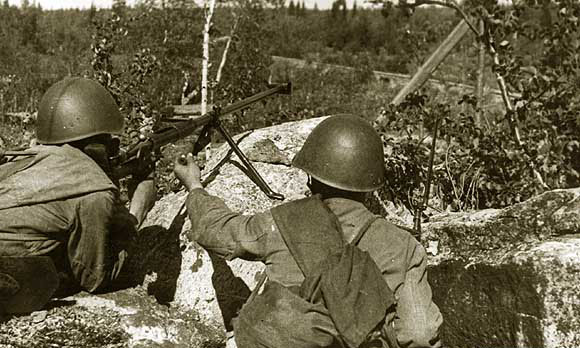

Vladimir Zimakov (1)

Vladimir Zimakov, mùng 9 tháng Năm năm1945, vùng Galati – Romania.
Tôi biết chiến tranh đã xảy ra khi thấy máy bay địch bắt đầu dội bom Smolensk, nơi chúng tôi đang sống. Đó là vào khoảng ngày 22 hay 23 tháng Sáu. Gia đình chúng tôi phải di tản. Năm 1943 tôi nhập ngũ, khi lên 18 tuổi. Ban đầu chúng tôi được đưa tới Morshansk, Tambov. Rồi chúng tôi được đưa tới huấn luyện quân sự tại doanh trại Melikess thuộc vùng Ulyanovsk. Chúng tôi được nhận đồ lót mới, nhưng quân phục thì đã cũ. Tôi đoán chúng được lấy từ những chiến sĩ ta đã hy sinh. Họ đã khâu vá cẩn thận những vết rách thủng do đạn và mảnh trái phá xuyên qua.
Người anh em ạ, lúc đó trời rất lạnh! Chúng tôi may mắn có được áo choàng, đồ lót bằng len và bông và giầy ủng với xà cạp đủ ấm. Có lần vài tay Uzbek bị đưa tới doanh trại. Ồ, họ thật đáng thương! Họ được phép mặc áo “khalat” (một loại áo khoác lông cừu) dưới lớp áo choàng. Thực ra, ta không bị lạnh đâu bởi phải tập luyện và chạy rất nhiều. Có lần trong suốt mười ngày liền chúng tôi phải hành quân tới 20 cây số mỗi ngày. Họ sẽ nhồi 16 ký cát vào ba lô của anh, thế rồi anh xách lấy khẩu súng và lên đường.
Việc huấn luyện tiếp tục từ tháng Giêng cho tới tháng Ba. Tới tháng Ba họ tập hợp chúng tôi lại và ra lệnh: “Những ai có trình độ từ lớp 7 trở lên - tiến lên trước ba bước.” Tôi bước khỏi hàng, bởi đã học xong lớp 8. Nói chung, hầu hết đám tân binh chúng tôi đều là dân quê. Vài người trong số họ học đến lớp 5 hay lớp 6, phần lớn thậm chí chưa từng được đi học. Khoảng một trăm người được chọn và gửi tới trường đào tạo sĩ quan. “Lấy vật dụng cá nhân và chuyển đi.” Lúc đó chúng tôi thì có cái gì đâu?! Một cặp đồ lót, một mẩu xà phòng đen và một cái khăn mặt. Thậm chí không ai có được cái bàn chải đánh răng - không phải là thói quen! Hãy xem trong balô lính Đức có gì. Một bàn chải răng sạch, bột đánh răng, một bánh xà phòng thứ phẩm. Tất cả đều ngăn nắp, đúng theo kiểu Đức. Bánh xà phòng thứ phẩm thô ráp, có lẽ được trộn cát hay thứ gì đó tương tự. Chúng rất lâu mòn.
Chúng tôi mất 3 ngày để đi từ Melikess tới thị trấn Kinel, gần Samara. Chúng tôi được phân về Trường Huấn luyện Bộ binh Kuybyshev số 3. Trường nằm cách dòng Volga khoảng 130 cây số. Chúng tôi trông giống như đám học sinh sỹ quan thời trước chiến tranh: áo len, quần bông, giầy ống cao cổ. Nếu kết thúc sáu tháng học ở đây, chúng tôi sẽ được ra mặt trận với quân hàm thiếu uý. Có biết bao nhiêu thiếu uý và trung uý bị giết ngoài mặt trận! Anh bạn ạ, chỉ một ít trong số họ là còn sống. Ngay khi vừa tới mặt trận, họ liền lọt vào kính ngắm của bọn xạ thủ bắn tỉa Đức. Chúng ta không bao giờ quan tâm tới việc che chắn ngụy trang. Sĩ quan được cấp loại sơmi khác với lính tráng, và đội mũ có lưỡi trai! Mà xạ thủ bắn tỉa Đức lại bắn rất cừ.
Chúng tôi học được hai tháng cho tới khi trường nhận lệnh đưa lứa học viên khóa trên ra mặt trận. Không có vấn đề gì, trừ việc quân phục dành cho họ không được chuyển đến đúng hẹn. Thế là chúng tôi phải cởi quân phục của mình ra cho lớp khóa trên mặc vào. Chúng tôi được nhận lại mớ quần áo cũ của mình, nhưng tới lúc này giầy ủng của chúng tôi đã mòn vẹt hết cả, thế nên chúng tôi được cấp thêm giầy vỏ cây và xà cạp trắng. Chúng tôi mặc chúng tiếp hai tháng cho tới khi quân phục mới được chuyển tới.

Huấn luyện các xạ thủ chống tăng.
Chúng tôi được học cả thảy ba tháng cho tới khi trường phải đóng cửa. Họ gửi chúng tôi tới Inza, nơi chúng tôi được phong hạ sĩ. Đó là một doanh trại lớn nằm giữa một cánh rừng thông. Ở đấy có những cái giường cao ghép thành ba tầng với những con chuột lớn, cỡ bằng con ngựa (cười). Lữ đoàn chúng tôi gồm những trung đoàn súng máy, pháo, xe tăng và chống tăng chuyên biệt. Tôi được chuyển tới trung đoàn chống tăng. Họ huấn luyện chúng tôi rất kỹ. Chúng tôi được học kỹ năng bắn súng trường, súng máy và tất nhiên là súng chống tăng Degtiarev và súng chống tăng Simonov. Khẩu Degtiarev giật rất mạnh vào vai. Khẩu Simonov giật yếu hơn, chứa năm viên đạn trong hộp súng và có chế độ lên đạn bán tự động. Chúng tôi bắn súng chống tăng vào những mô hình xe tăng bằng gỗ dán chuyển động. Nhắm vào đâu? Khi chúng tiến về phía ta, hãy nhắm vào lỗ quan trắc hay phía dưới tháp pháo để làm nó mắc kẹt. Bắn vào lỗ quan trắc! Cứ làm đi, nhắm vào chiếc xe tăng từ khoảng cách 500 mét. Vài người làm được nhưng tôi thì không. Tất nhiên, ta có thể bắn đứt xích nó bằng một viên đạn, nếu may mắn. Việc này chặn nó dừng lại và đám xạ thủ chống tăng hoặc pháo thủ sẽ tiêu diệt nó. Khi chiếc xe tăng chìa sườn về phía ta thì có thể ngắm vào thùng đạn của nó. Thật tuyệt! Chuyện đó sẽ gây ra một tiếng nổ lớn! Cứ như pháo hoa! Chiếc tăng sẽ tan xác, tháp xe cùng nòng pháo văng ra xa. Tuyệt vời! Lính tráng la hét, nhảy nhót, tung mũ lên trời. Đó là lần chúng tôi hạ được chiếc “Ferdinand” của mình, nhưng đó lại là trường hợp cá biệt.
Họ dạy chúng tôi trong ba tháng, thăng chúng tôi lon hạ sĩ và đưa chúng tôi ra mặt trận. Chúng tôi đi trên xe lửa suốt hai tháng trời. Trên đường ra mặt trận khoảng 20-30 người trong chúng tôi bị giết bởi mìn. Mọi khoảnh đất dọc tuyến đường sắt đều bị rải đầy mìn. Một tay lính thuỷ bị một quả mìn “cóc” cắt rời người. Làm thế nào hắn lại bị vậy? Thật ngớ ngẩn! Vài tay lính trẻ đứng đái gần đó. Hắn bảo họ: “Xem này, nó sẽ nhảy. Tớ sẽ chụp lấy nó và nó sẽ không nổ”. Quả mìn nhảy lên và phát nổ. Hắn bị xén đứt một cánh tay và ruột xổ tung. Một người nữa chết và ba người khác bị thương.
Chúng tôi tới thành phố Starưi Oskol và phát hiện ra cây cầu đã nổ tung, thế là chúng tôi bị kẹt lại. Trận Kursk vừa kết thúc từ hai tuần trước. Khi đoàn tàu chúng tôi còn phải chờ thông đường, chúng tôi được lệnh đi chôn xác chết. Chúng tôi mang xác lính xe tăng ra khỏi xe của họ, cả lính ta lẫn lính Đức. Mùi xác chết thật kinh khủng! Sau một thời gian chúng tôi đã quen được với nó, nhưng ban đầu thì thật lợm mửa. Chúng tôi không có chọn lựa nào khác. Chà, ở chỗ đấy có quá nhiều xe tăng bị nổ tung! Vài cái đâm vào nhau và dựng đứng lên. Tăng bên nào bị nhiều hơn à? Chúng tôi không đếm. Có thể là tăng của bọn Đức.
Chúng tôi chôn cất binh lính trong những ngôi mộ tập thể. Tất nhiên, chúng tôi luôn lục túi họ để tìm giấy tờ. Nếu thấy tiền hay cái mề đay đựng ảnh, chúng tôi gửi nó về cho người thân của họ. Đôi lúc chúng tôi tìm thấy những bức thư tuyệt mệnh. Rất nhiều người chẳng có gì, không một chút giấy tờ. Xác những người lính xe tăng trông như những búp bê bị cháy rụi. Làm sao chúng tôi xác định tên tuổi của họ được? Tôi không hiểu tại sao, nhưng những người như vậy xác không có mùi. Chúng tôi chôn lính Nga và lính Đức chung với nhau và chỉ viết lên mộ như sau: “Nơi đây chôn cất một số lượng … như thế lính Nga và một số lượng … như thế lính Đức”.
Cho tới năm 1944 Sư đoàn Bộ binh 22 chúng tôi thuộc Tập đoàn quân 55 vẫn chưa tham dự trận đánh nào. Chúng tôi được chuyển tới ngoại ô thành phố Korsun-Schevchenko. Chúng tôi hành quân bộ suốt gần 70 cây số giữa những đêm dài tháng Giêng. Mất khoảng hai tuần. Chúng tôi vừa đi vừa ngủ gà ngủ gật suốt ngày. Tháng Giêng năm đó thời tiết khá ấm áp. Đường xá biến thành những vũng lầy. Ta hành quân trên dải đất đen xứ Ukraina, nó cứ dính bết từng tảng lên ủng và xà cạp. Ta cạo sạch đi rồi nó lại dính bết như cũ sau khoảng chục bước chân. Ồ, chúng tôi đã lội bộ được khá nhiều (cười lớn).

Xạ thủ chống tăng thuộc Sư đoàn Bộ binh 186. Mặt trận Kalerian. 1942.
Tôi phục vụ trong một đại đội chống tăng. Trợ thủ của tôi là Malưsev. Cậu ta là một tay cao kều người Siberia, sinh năm 1925. Chúng tôi có khẩu chống tăng loại Simonov. Ban đầu chúng tôi phải vác khẩu súng được lắp ráp hoàn chỉnh, thế rồi chỉ huy cho phép chúng tôi tháo rời nó ra. Thử tưởng tượng xem, nó nặng tới 22 ký. Ngoài ra, chúng tôi còn đem theo 200 viên đạn dành cho nó, tức thêm 28 ký nữa. Tôi cũng phải đeo một khẩu Nagan (xạ thủ số 1 có một khẩu súng lục và xạ thủ số 2 có một tiểu liên). Malưsev thì vác một khẩu tiểu liên PPSh cùng ba băng đạn, lương khô và đồ lót. Chúng tôi phải tự mình vác tất cả những thứ đó!
“Halt!” (tiếng Đức: dừng lại – LTD) Được thôi. Trinh sát báo cáo: “Bọn Đức ở gần đây”. Chúng tôi nhận lệnh phải đào chiến hào ngay rìa làng. Ngôi làng tên gì nhỉ? “Komarovka.” Làm như ghê gớm lắm vậy, “Komarovka!” (“Muỗi mắt” – Anton Kravchenko). Trong tiếng Ukraina nó là Komarivka. Được thôi, nhưng đào chiến hào hướng nào? Hướng này, về phía ngôi làng. Chúng tôi đào chiến hào. Chiến hào bọn tôi nằm dưới một cối xay gió mái có hình móng ngựa. Mấy giờ rồi nhỉ? Đã 3 giờ rồi. Chúng tôi đào sâu thêm một chút, nhưng nước bắt đầu rỉ vào trong hào nên đành dừng lại.
Vâng, ngay lúc đó chúng tôi gặp chuyện rắc rối. Chưa bao giờ gặp lại lần nào như thế trong suốt chiến tranh. Sự việc là cùng lúc đó bọn Đức đang lặng lẽ ngồi trong một khe núi phía sau làng. Ngay khi đám bộ binh đào xong chiến hào và ngồi nghỉ, chúng bắt đầu nã súng cối cật lực về hướng ngôi làng. Chúng có một khẩu đại liên ngay trên chiến hào chúng tôi, trên chính cái cối xay ấy. Và khẩu súng đó đang bắn thẳng vào làng. Chiến hào chúng tôi chỉ dài khoảng 5 mét, tại sao chúng không quẳng một quả lựu đạn vào đấy nhỉ? Có lẽ mấy tên đó không còn quả nào chăng? Malưsev chờ một lát rồi bảo: “Valodka, tớ sẽ trèo lên trên ấy. Tớ sẽ khử chúng.” Cậu ta nói thêm: “Đưa tớ khẩu súng lục của cậu”. Tôi đưa khẩu súng lục của mình và cậu ta trèo lên. Một lát sau, tôi nghe tiếng súng bắn qua lại, của cả bọn Đức và Malưsev. “Malưsev chết rồi.” Tôi nghĩ. Không hề như vậy! Cậu ta quay trở ra. Đã giết xong cả hai thằng ngồi trên ấy. “Xong rồi,” cậu ta nói, “Tớ đã hạ chúng rồi”.
Rồi cơn ác mộng bắt đầu. Anh bạn ạ, tối hôm đó tôi không thấy một sĩ quan nào của ta cả! Chúng tôi bắt đầu bắn bằng khẩu súng của mình. Nhưng bắn về hướng nào? Trời tối như mực! Chúng tôi cứ bắn về hướng có chớp sáng, hết khoảng 20 hay 30 viên đạn theo kiểu ấy. Về sau mới biết là ở đấy chỉ có khoảng 500 tên Đức. Chúng tôi có đến hai tiểu đoàn bố trí trong các chiến hào để chống lại chúng. Thêm vào đó, chúng tôi còn tới một tiểu đoàn dự bị. Chúng tôi là lính mới, anh biết đấy, nhưng những tay có kinh nghiệm lúc ấy cũng phải lúng túng. Rồi chúng tôi gặp một tay thượng uý. Anh ta hét, “Nằm xuống, các cậu. Tháo khóa nòng ra và ném khẩu súng của các cậu đi.” Chúng tôi làm theo như anh ta bảo. Chúng tôi tháo nó ra và giấu trong chiến hào. Malưsev nhét cái khóa nòng vào túi rồi phủ chiếc áo telogreika của mình lên khẩu súng chống tăng. Tay sỹ quan ấy bị thương vào cả hai chân. Chúng tôi xốc nách anh ta rồi cùng chạy. Bọn Đức liên tục nã súng cối. Phần còn lại của đơn vị chúng tôi đang rút lui. Binh lính cứ ngã xuống, ngã xuống. Còn bọn Đức vẫn tiếp tục bắn. Hầu hết đám lính ta rẽ vào một cái thung lũng nhỏ để tránh đạn. Người sỹ quan nói: “Hãy chạy thẳng lên đồi! Lên trên đồi! Đừng chui xuống cái thung lũng ấy, bây giờ mà ở đấy là bị thịt ngay!” Quả vậy. Bọn Đức chỉnh khẩu cối theo hướng ấy, thật kinh khủng. Tưởng tượng mà xem? Và rồi chúng tôi đã vượt qua đỉnh đồi. Chúng tôi ngồi bệt xuống để nghỉ. Anh ta nói: “Hãy nghỉ một lát, tim tôi lộn lên tận cổ rồi.” Anh ấy trông còn trẻ, nhưng cả hai chân đều bị thương. May thay không trúng xương, chỉ bị vào phần mềm.
A hà. Bình minh đã lên. Anh biết không, chúng tôi đang ngồi như thế trong đám cỏ khô cao ngập đầu thì có hai tên Đức đi ngang. Thượng úy thấy chúng trước. “Im lặng,” anh ta nói, “bọn Đức đấy. Nằm xuống. Tôi sẽ bắn, để các cậu làm thì trượt mất.” Anh ta lên cò khẩu TT của mình rồi ngắm bắn. Bóp cò. Thằng Đức thứ hai bắn trả ngay lập tức. Bọn Đức được huấn luyện để bắn ngay về hướng có tiếng súng. Thượng uý hạ luôn được thằng thứ hai. Bắn liền tay. Thật là một tay có kinh nghiệm. Chúng tôi thì sợ đến chết được. Tôi còn nghĩ rằng thế là tiêu rồi. Thật ra, tất cả chỉ mới là lần đầu đối với chúng tôi.
Vâng, chúng tôi đã rút lui. Không như chúng tôi, tiểu đoàn dự bị tiến lên, quét sạch bọn Đức, chiếm lấy ngôi làng và tiếp tục hành quân. Còn chúng tôi có hai tiểu đoàn thì lại bỏ chạy. Thế đấy. Một nửa số người chạy vào cái thung lũng đã bị giết chết. Nói ngắn gọn, chúng tôi chỉ còn lại một tiểu đoàn trong số hai tiểu đoàn ban đầu. Một tiểu đoàn có 500 người. Một đại đội gồm 125 người. Tóm lại, chúng tôi có ba đại đội bộ binh và mấy trung đội súng máy, tiểu liên và súng cối.
Sáng hôm đó chúng tôi tới sở chỉ huy sư đoàn. Chúng tôi khiêng thượng uý tới đơn vị quân y và báo cáo lại những gì đã xảy ra trong thung lũng. Họ hứa sẽ gửi cứu thương và xe ngựa tới để vận chuyển những người sống sót. Thượng uý nói: “Những chàng trai này đã cứu mạng tôi, họ phải được tặng thưởng.” Chúng tôi trả lời, “Chính anh ấy đã cứu mạng chúng tôi.” Tất cả đều cười. “Những anh chàng thiếu kinh nghiệm.” Anh ấy được đưa lên bàn mổ ngay lập tức. Họ chữa vết thương cho anh rất cẩn thận, dù không có thuốc mê. Anh ấy rất can đảm. Một anh chàng dũng cảm!
- A hà. Bây giờ chúng tôi đi đâu đây?
- Vũ khí của các anh đâu?
- Đây ạ.
- Các anh là lính gì?
- Chúng tôi là xạ thủ chống tăng.
- Thế súng chống tăng của các anh đâu?
- Chúng tôi bỏ lại ở chỗ kia.
- Quay lại lấy chúng ngay!
Vâng, chúng tôi quay lại. Buổi sáng trời lạnh hơn và con đường đã đỡ lầy lội. Chúng tôi đi và nghe thấy những tiếng rên rỉ trong cái thung lũng! Thật khủng khiếp! Ma quỷ! Không còn ai trên đường, chúng tôi đang đi một mình. Thế là chúng tôi quay lại và tìm thấy khẩu chống tăng của mình ở nơi đã bỏ nó lại. Chúng tôi vào trong làng – không ai còn sống sót trong đó. Rồi một ông già xuất hiện từ một cái lán. A ha. Tôi nói: “Bố ơi, làm thế nào bố còn sống sót được?” “Lão không biết, các con ạ. Đám các con bắn trả bọn Đức từ trong căn nhà này suốt đêm qua.” Chúng tôi tiến lại gần hơn. Đó là đám trinh sát của trung đoàn chúng tôi. Tất cả đã bị giết. Thế đấy. Trận đánh đầu tiên của chúng tôi là vậy đấy.
Artem Drabkin: Có khi nào các ông bắn vào bộ binh bằng súng chống tăng không?
Đôi khi chúng tôi làm thế, nhưng thường chúng tôi dành đạn để bắn xe tăng. Nhân tiện, xin kể về một vụ như thế. Việc xảy ra trong những ngày đầu tiên của chúng tôi ngoài mặt trận. Tôi cho rằng bọn Đức đã quyết định kiểm tra xem chúng tôi sẽ xử sự thế nào dưới làn hỏa lực mạnh. Vì thế chúng tiến hành pháo kích chúng tôi bằng súng cối và đại bác. Trận pháo kích thật dữ dội, chúng tôi phải ẩn nấp để tránh mảnh đạn tận dưới đáy chiến hào. Có lẽ một quả đạn đã rơi vào chiến hào bên cạnh. Có vài người bị giết. Một cậu Uzbek bị “giập”. Cậu ta nhảy khỏi chiến hào, quay qua quay lại rồi chạy về phía bọn Đức. Tiểu đoàn trưởng chạy tới, miệng hét: “Bắn hắn đi! Bắn đi!” Anh ta chạy tới chỗ chúng tôi, gạt Malưsev sang một bên, chĩa khẩu súng chống tăng của chúng tôi về người lính ấy và bắn trúng ngay sau đầu anh ta. Khi chúng tôi chạy lên phản công, lật ngửa anh ta lên – khuôn mặt đã biến mất, bị vỡ tung. Quỷ tha ma bắt, viên đạn ấy nặng tới 70 gram.
Sau đấy, chúng tôi ngồi trong chiến hào quanh Korsun suốt một tuần lễ. Đó là nơi mà chúng tôi, Malưsev và tôi, đã hạ được một chiếc Ferdinand. (Lính Nga gọi chung tất cả các loại pháo tự hành Đức là “Ferdinand” – Artem Drabkin) (“Ferdinand” là loại pháo tự hành Elephant nổi tiếng, bộ máy tuyên truyền Quốc xã sử dụng thứ vũ khí này để quảng cáo cho sức mạnh của Quân đội Đức – LTD). Vị trí chiến đấu của chúng tôi rất bất hợp lý. Bọn Đức đóng trên một điểm cao trong khi chúng tôi lại nằm dưới một khoảng trũng. Khoảng cánh giữa hai bên là 200 mét. Có một ngôi làng nằm trên đỉnh cao ấy. Một khẩu pháo tự hành nấp sau góc của một trong những căn nhà ấy. Chỉ có cái nòng pháo thò ra. Bọn quan trắc của chúng có lẽ cũng ở đấy, bởi ngay khi chúng xác định được các vị trí của chúng tôi, chiếc xe trườn tới từ sau ngôi nhà và nã đạn rất chính xác. Lính ta bị thịt dần. Mấy khẩu pháo 45mm của ta bố trí sau lưng chúng tôi, trên một đỉnh đồi. Anh xem, họ chọn một vị trí tệ thế đấy, nơi thiếu che chắn nhất. Tới lúc này, không một pháo thủ nào còn sống. Khi quay lại chỗ này, chúng tôi trông thấy hai khẩu pháo và các xác chết nằm ngay cạnh. Và họ đã bị phủ một lớp tuyết, những người lính ấy. Không có ai chôn cất cho họ. Năm chiếc T-34 bị bắn cháy ngay trước mắt chúng tôi. Chỉ một phát đạn, và thế là chấm hết. Rồi đến chiếc kế tiếp. Bọn Đức khát máu, chúng thật là những chiến binh thông minh và mạnh mẽ. Không có ai mạnh hơn chúng, ngoại trừ lũ khờ dại chúng tôi. Chúng tôi luôn chiến đấu với chúng bằng nắm đấm của mình, chạy thẳng vào chỗ nguy hiểm mà không hề quan sát trước.
Đại đội trưởng đã gửi đi ba khẩu đội chống tăng, không ai trong bọn họ quay về. Hoặc một tên bắn tỉa diệt họ, hoặc họ nấp sau những xe tăng cháy và bị trúng đạn của khẩu pháo tự hành, tôi không rõ lắm. Chỉ huy nói: “Tiến lên, các chàng trai, trườn xuống dưới cái xe tăng đầu tiên, đừng sợ.” Malưsev của tôi là một chàng trai dũng cảm. Chà, cậu ta là một thợ săn thực sự, một tay Siberi! Dù tôi là xạ thủ số 1, cậu ta luôn là người bắn khẩu súng chống tăng. Tôi thì không có can đảm (cười). Vâng, cậu ta đã bảo: “Valođia, đừng lo. Chúng ta sẽ ngắm trúng nó.” Và chúng tôi mất suốt đêm để trườn tới nơi. Chúng tôi nấp dưới một trong những chiếc xe tăng đấy, và bắn, gần như ngay sát bọn Đức. Chỉ cách khoảng 150 mét tới chỗ căn nhà đấy.

Những xạ thủ chống tăng.
Tới sáng chúng tôi bắt đầu bắn hết phát này đến phát khác. Chúng tôi bắn trúng vào bánh xe hoặc xích xe gì đó, bởi chúng tôi chẳng nhìn rõ cái gì khác. Rồi nó phát hiện ra chúng tôi và bắn trả. Úi chà chà, thật ác liệt! Cái tháp pháo trên đầu chúng tôi bị nổ tung! May mắn thay, phát đạn không bắn trúng phía dưới xe tăng, nếu không chúng tôi đã rồi đời. Tai tôi điếc đặc. Rồi nó trườn khỏi góc nhà để kết liễu chúng tôi. Tôi nghĩ: “Thế là hết, chúng sẽ nghiền nát chúng ta.” Nhưng Malưsev vẫn bình tĩnh. Khi chiếc xe chìa sườn về phía chúng tôi, cậu ấy chĩa khẩu chống tăng ra từ dưới cái xích xe và nã luôn năm phát vào sườn nó, phát này nối tiếp phát kia. Thật là một cú ghê gớm! Chiếc Ferdinand của chúng tôi nổ tung thành từng mảnh – cả tháp pháo, mọi thứ!
Trên đường về, bọn Đức bắn đạn cối trúng vào bọn tôi. Lúc đó chúng tôi đã về rất gần chiến hào của mình rồi. Những phát đạn nổ rất gần. Một phát sượt sát cạnh. Một phát khác bắn trượt phía trước. Tôi nói: “Malưsev, chạy mau!” Tại sao cậu ấy không làm theo nhỉ? Tôi cũng không biết nữa. Hoặc cậu ấy đã bị thương hoặc bị ù tai mất rồi. Tôi kéo mạnh chân cậu ấy, “Đi nào!” Tôi không nhớ điều gì xảy ra tiếp theo. Tôi chỉ tỉnh lại trong chiến hào khi đạn bắn đã ngớt. Mọi người nói: “Một phát đạn nổ trúng cả hai cậu”. Tôi mặc một áo giáp ở dưới chiếc telogreika và áo choàng. Anh biết không, chiếc áo choàng của tôi bị xé tung, nhưng tôi không bị một vết trầy nào. Malưsev bị xé rách chân phải. Tại sao chúng tôi không chờ tới trời tối nhỉ? Đại đội trưởng đã bảo chúng tôi, “Hoàn thành nhiệm vụ và quay về lập tức. Bằng không, các cậu sẽ chết. Bọn Đức sẽ bò tới và giết các cậu.” Chúng tôi đem theo một khẩu súng chống tăng, một khẩu Nagan và một khẩu tiểu liên với chỉ một băng đạn. Malưsev không mang nhiều hơn, cậu ấy tin chắc mọi sự đều sẽ tốt đẹp. Tôi được nhận một phần thưởng khi kết thúc chiến tranh, huy chương “Vì Dũng cảm”, nhờ chiến công ấy. Đúng ra, tất cả những ai từng bắn hạ xe tăng đều xứng đáng được thưởng 500 rúp và Huân chương Sao Đỏ. Tất nhiên, phần thưởng trước tiên và tuyệt nhất vẫn là “Vì Dũng cảm” và kế tới là Huân chương Vẻ vang.
Khi hoàng hôn xuống, hầu hết chiến sĩ đại đội chúng tôi đều đã hy sinh. Lúc khởi đầu, chúng tôi có 60 người tức 30 khẩu súng chống tăng (một đại đội chống tăng của trung đoàn). Giờ chúng tôi chỉ còn lại khoảng một chục khẩu đội. Chỉ huy trung đội cũng bị giết. Một tuần trôi qua và chúng tôi nhận được tiếp viện lấy từ những người địa phương, thuộc lứa sinh năm 1926-1927. Tất cả đều được gọi nhập ngũ và chuyển tới mặt trận. Chúng tôi gọi họ là “sơmi đen”, do họ mặc đồ màu tối và áo khoác lính màu xám. Họ vẫn chưa được nhận quân phục.
Rồi chúng tôi tiến xa hơn và tới trú trong những hầm trú ẩn được đám công binh đào sẵn. Họ đã làm hết sức mình, hầm được lót tới hai hay ba lớp gỗ. Tại đó tôi đã bị “giập”. Khi tôi tỉnh lại, không còn ai bên trong và một góc hầm đã bị sụp. Tôi không báo cáo lại cho trạm quân y. Tôi không hiểu đó là một trận oanh kích hay do cái gì khác. Hình như kho đạn pháo của bọn Đức lúc đó đã gần cạn. Có lẽ là một quả bom.
Chúng tôi tiến xa hơn. Lại là hành quân đêm. Trăng sáng vằng vặc. Máy bay trinh sát của bọn Đức bay liên tục. Tất nhiên, khi “Cái khung” ấy xuất hiện, chúng tôi nhận được lệnh “Halt!”. Khi bọn Đức bay đi, chúng tôi lại tiếp tục hành quân. Đây là lúc tôi nhận được một người trợ thủ mới. Chúng tôi tiếp tục đi như vậy cho tới khi cả hai rơi vào một hố bom. Nó chứa đầy nước, cao ngang mức mặt đường, và rất sâu đến nỗi đầu tôi ngập trong nước. Chúng tôi chật vật ngoi lên và được đưa tới trạm quân y. Họ kiểm tra trợ thủ của tôi, đo nhiệt độ và khám tổng quát, rồi thả ra. Tôi thì bị giữ lại. “Bị giập.” Tôi bị đau tai và kèm theo là phát âm khó. Tôi được đưa tới bệnh viện và phải nằm đấy hai tuần. Rồi các cậu ấy bắt đầu bàn: “Sao chúng ta phải nằm đây? Hãy đuổi theo đơn vị của mình. Ở đấy vui hơn.” Bọn tôi có sáu mống cả thảy. Chúng tôi đánh lừa y tá của mình để họ trả lại quân phục. Rồi chúng tôi nói: “Tạm biệt nhé, Masha!” “Đám nhóc các anh đi đâu?” “Tới mặt trận, đuổi theo đơn vị của mình” “Tôi sẽ báo cáo lên trên!” “Cứ làm đi”.
Phỏng vấn: Artem Drabkin-Anton Kravchenko Dịch từ Nga sang Anh: Anton Kravchenko Chỉnh sửa bản tiếng Anh: Claire Fuller Martin Dịch từ Anh sang Việt: Lý Thế Dân